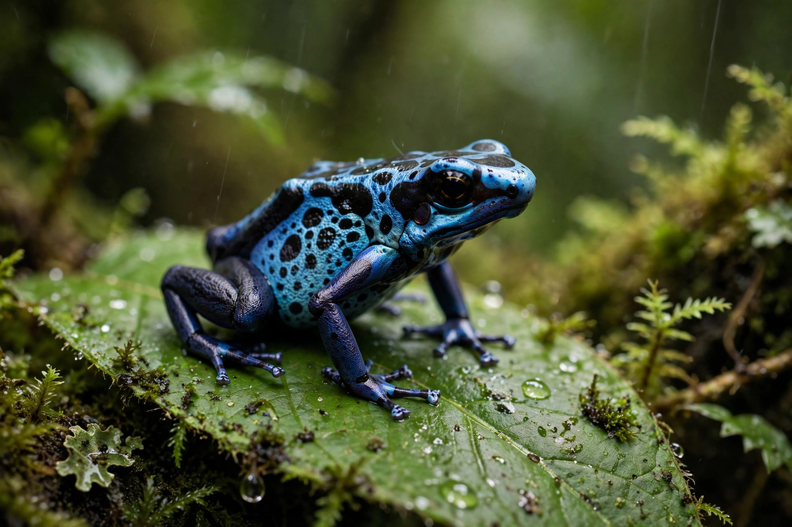

Toxin
From Wikipedia, the free encyclopedia
A toxin is a poisonous substance produced by a living organism — a bacterium, plant, fungus or animal — that can cause disease or death in other organisms. Toxins are distinct from man-made poisons (toxicants) and from Venom, which is a toxin mixture actively delivered by bite or sting, though the terms overlap in everyday use.

[Image: Warning colouration of a poison dart frog, a toxin-bearing animal]
Bacterial and other toxins
Many bacterial diseases are toxin diseases: tetanus and botulinum toxins block nerve signalling (botulinum toxin is among the most potent substances known, and in tiny doses is the drug Botox); cholera and diphtheria toxins damage cells by modifying their proteins; staphylococcal toxins cause food poisoning. Plant toxins include ricin and many alkaloids; fungal toxins (mycotoxins) such as aflatoxin contaminate stored grain and damage the liver.
Defence and use
Animals evolve resistance — and predators advertise toxins with warning colouration. Medicine exploits toxins as tools and drugs, and the immune system can be trained against inactivated toxins (toxoids), the basis of tetanus and diphtheria vaccines.